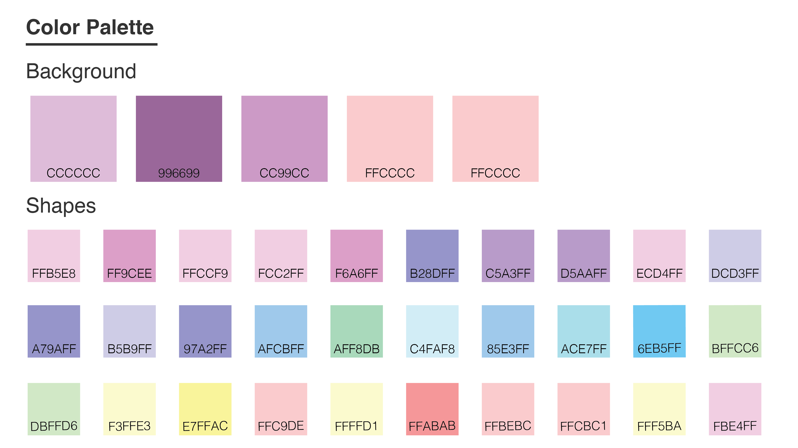
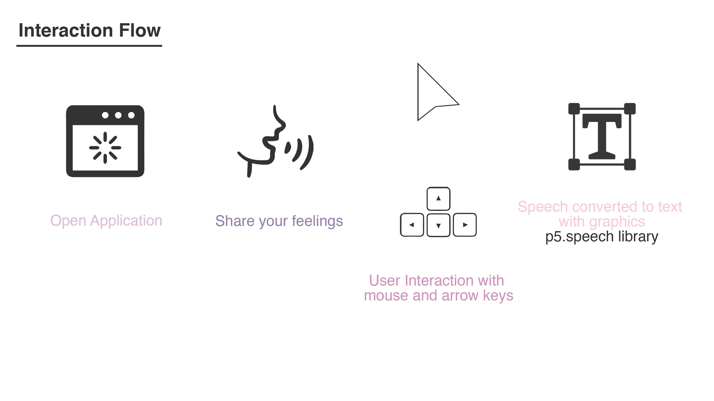

This project is created during COVID-19 to encourage people to talk about their feelings to stay connected to their inner-selves. I made this using p5.js, and p5.speech library to convert speech to text. It has been my personal audio diary to keep track of my feelings and I hope this would help more people during hard times like this.
Tools: front-end,Javascript, HTML5, CSS, Github, Heroku, p5.js, p5.speech
Time: Mar. 2019 for COVID-19
To build a personal sanctuary for people to talk about their feelings during hard times. COVID-19 pandemic is just one of the hard times we are and will be going through.
Developer & Designer
This is a passion project since I want to make people feel happier during this depressing pandemic. People are feeling more sensitive and even refer to their living space as ”house arrest”, “prison”, “solitude”. (from my encounter on social media) I wanted to create a private and safe space for them to talk about their feelings without recording any of the data.
We are undergoing a difficult time right now in 2020 since the outburst of the COVID-19. The global pandemic is causing so many distress in us. I have been keeping myself busy with movies, books, and cooking while conducting social distancing to prevent the spread of the virus for over two weeks then.
I felt the urge to create something so that people can talk about their feelings.
I hope through this, you can start a conversation with yourself and look within.
Maybe, this could be your personal sanctuary while exercising social distancing.
The idea of this project came when I was about to write in my journal for the first time in a long time since January 2019. I wanted to write down my self-reflections as I get to spend more time with myself.
When I was about to get my journal, I thought writing takes a long time compared to talking. Why don’t I create an audio diary that I can keep to myself as my journal instead?
So I spent two days writing this program since I knew it would benefit others to get through this hard time. Also, I appreciate talking more because of COVID-19. When I am spending time with myself, I barely talk. When I have zoom meetings, hearing myself talk feels strange. I want to salvage the lost social connections with myself through this audio diary as well. It makes me so happy knowing that this will benefit people alike. The whole globe is a community now and we are all in this together. It is during this moment that I realized how important social interactions are in our lives.
I used p5.js and p5 speech library to create an audio diary with some visual twist.
For the color palette, I selected the pastel color to create a sense of calm and positivity.
For the user interaction, I created the experience flow as below:
